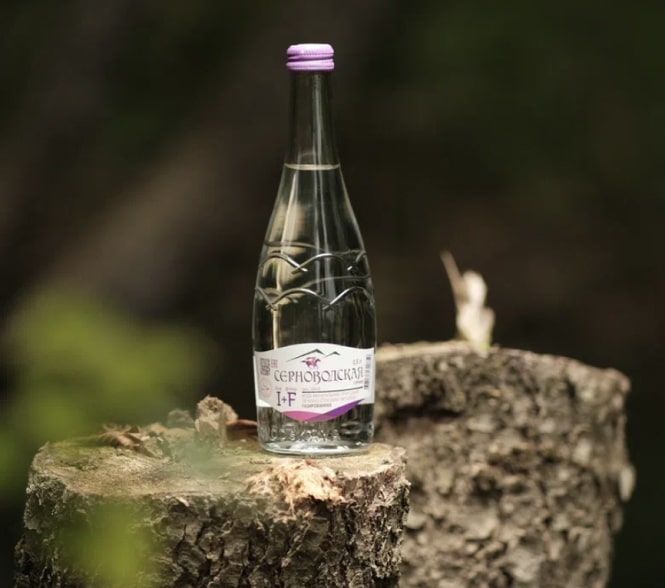
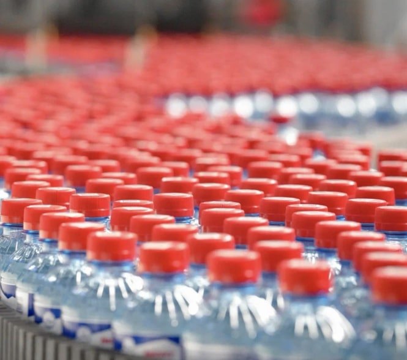
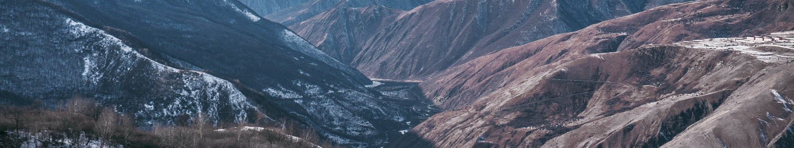
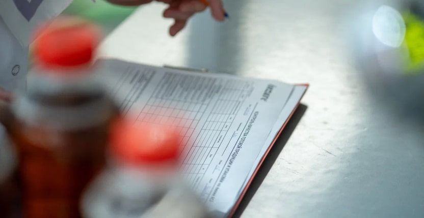
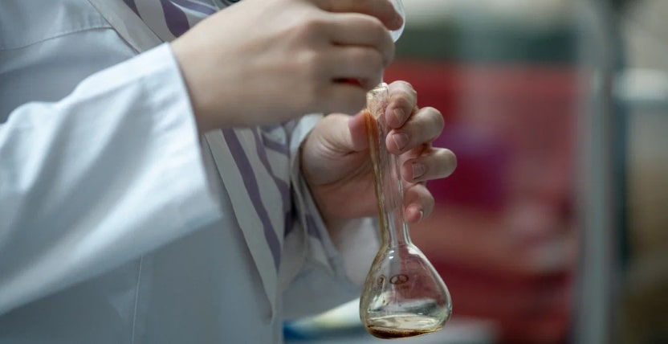
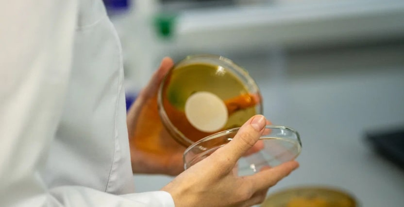

Серноводский источник берет начало у подножия ледника, проходит сквозь горные слои, которые спрессовались миллионы лет назад, и насыщается полезными микроэлементами. Именно из этой воды завод выпускает широкий ассортимент продукции: минеральную и бутилированную воду, холодный чай, соки, лимонады, энергетические напитки.
Inzare разработала и интегрировала в собственную систему управления качеством международные стандарты GMP (надлежащей производственной практики), HAССP (анализ безопасности и критические контрольные точки), следуя Политике предприятия по обеспечению пищевой безопасности и сохранности качества продукции.
На заводе установлено оборудование асептического розлива соков в ПЭТару (KHS Германия), которое стоит только на двух предприятиях в РФ, есть две собственные аналитические лаборатории: физико-химическая и микробиологическая. Жесткий контроль осуществляется на всех стадиях производственного процесса, начиная с поступающих вспомогательных материалов и сырья до контроля отгружаемой продукции.
22 января 2007 года в экологически чистом районе Чеченской республики в Сунженском районе в селе Серноводское состоялось открытие современного завода по выпуску питьевой минерально-лечебной воды "Серноводская" и различных безалкогольных напитков.
Это была команда (20 человек) молодых профессионалов c европейским менеджментом, с чётко поставленными целями и ясной стратегией.
1 июня 2008 года с конвейера сошла первая бутылка минеральной воды.
Сегодня компания Inzare, ООО «Чеченские минеральные воды» — это высокотехнологичное предприятие, одно из самых современных в России с полной автоматизацией всех процессов и вспомогательных операций, позволяющих выпускать продукцию самого высокого качества, с численностью более 700 человек. Здесь эффективно работают системы контроля качества, соответствующие требованиям международных стандартов.
Процесс розлива напитка начинается с получения пэт (полиэтилентерефталата) тары. Преформа (заготовка) нагревается до 100 градусов и помещается в пресс-формы, где идет процесс выдува бутылки.
Полученная ПЭТ бутылка до этапа розлива проходит предварительную стерилизацию, чтобы избежать микробиологического роста продукта. Перед розливом напитка в бутылку, продукт проходит этапы деаэрации (удаление кислорода и других газов из жидкости) и пастеризации, при котором напиток нагревается до 96 градусов и охлаждается до 6 градусов.
Этот процесс позволяет производить натуральный продукт без добавления консервантов.
Микробиологическая лаборатория в компании Inzare является неотъемлемой частью в процессе производства и контроля качества напитков.
При проверке напитков в такой лаборатории применяются ряд строгих и четко установленных процедур, которые помогают убедиться в его безопасности и пригодности для употребления.
Запись наименования продукта в специальный журнал в целях отслеживания каждого шага и обеспечения прозрачности всего процесса.
Проведение микробиологического посева на питательные среды. На специальные питательные среды помещается небольшое количество продукта, для выявления наличия потенциально опасных микроорганизмов.
Помещение посевов в специальные термостаты для инкубации. Термостаты поддерживают определенную температуру и условия, необходимые для развития микроорганизмов. По истечении определенного времени инкубации проводится проверка питательных сред на наличие роста бактерий, плесени или дрожжей. При наличии роста микроорганизмов лаборанты в журнале делают соответствующие пометки, указывают вид выявленных микроорганизмов и количество колоний. Это помогает оценить степень загрязнения продукта и определить дальнейшие меры по его обработке или утилизации.
После розлива колы в бутылки, специалисты лаборатории Inzare проводят следующие этапы проверки:
Компания Inzare является участником программы нацпроекта "производительность труда" ФЦК («Федеральный центр компетенций в сфере производительности труда»).
В октябре 2023 года были подведены итоги реализации проекта, а именно: увеличение скорости выпуска продукции (на треть (25 тысяч) увеличение выпуска минеральной воды и лимонадов в месяц), улучшение условий труда сотрудников и вовлеченность персонала в культуру непрерывных улучшений.